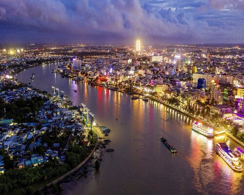

Cần Thơ - Thủ phủ của đồng bằng sông Cửu Long
Chào mừng bạn đến với blog du lịch hôm nay, nơi chúng ta sẽ cùng nhau khám phá thành phố ven sông nổi tiếng và quyến rũ tại miền Tây Nam Bộ Việt Nam - Cần Thơ. Nằm bên bờ sông Hậu giữa lòng đồng bằng sông Cửu Long, Cần Thơ không chỉ là trung tâm kinh tế quan trọng mà còn là điểm đến tuyệt vời với văn hóa sôi động và phong cảnh đẹp mê hồn.
Dòng sông Hậu mang đến cho thành phố sự sống sức và là nguồn cảm hứng không ngừng cho những người yêu thiên nhiên. Bến Ninh Kiều, nơi có những hàng cây xanh mát bên bờ sông và là trái tim của thành phố, là nơi tuyệt vời để bạn thưởng thức hoàng hôn tuyệt diệu và cảm nhận nhịp sống sôi động của đời sống ven sông. Cần Thơ nổi tiếng với hệ thống kênh rải rác khắp thành phố, tạo nên bức tranh cổ kính và gần gũi với đời sống dân dụ. Các cầu nổi tiếng như Cầu Cần Thơ và Cầu Ông Pagoda là những điểm du lịch không thể bỏ qua, mang đến cho du khách không chỉ cơ hội ngắm nhìn phong cảnh tuyệt vời mà còn thưởng thức vẻ đẹp kiến trúc độc đáo. Khám phá ẩm thực Cần Thơ cũng là một trải nghiệm không thể thiếu. Một số món ngon đặc trưng như bún riêu Cần Thơ, bún cá Hấp, và bánh ướt lòng gà sẽ làm hài lòng cả những thực khách khó tính nhất. Cần Thơ không chỉ là thành phố lãng mạn mà còn là điểm đến mang đến sự thoải mái và yên bình. Hãy để Cần Thơ mở ra trước bạn vẻ đẹp của miền Tây Nam Bộ, nơi mà cuộc sống diễn ra chậm rãi và hòa mình vào văn hóa độc đáo của người dân địa phương.